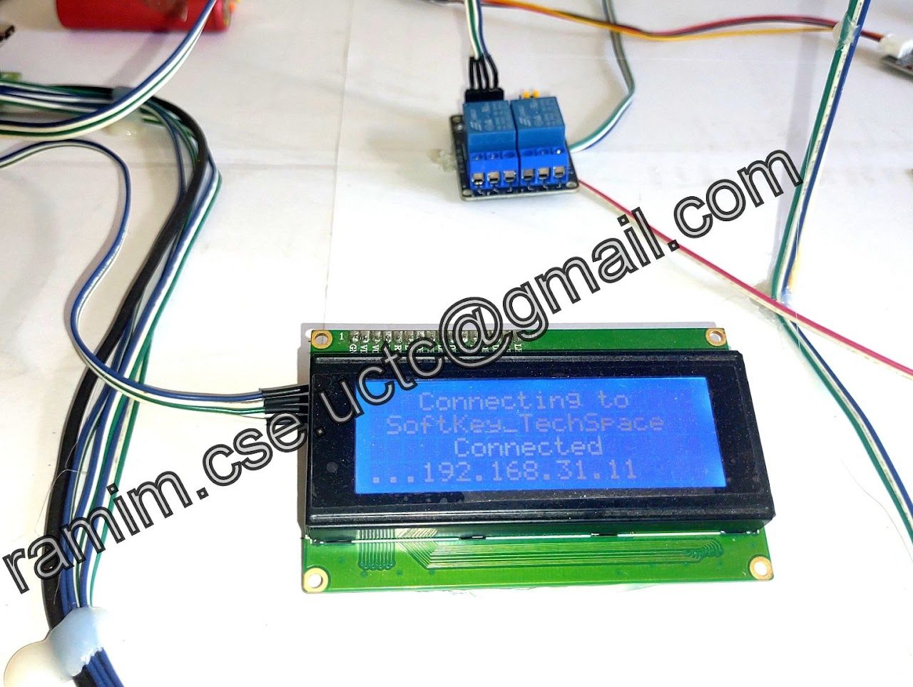
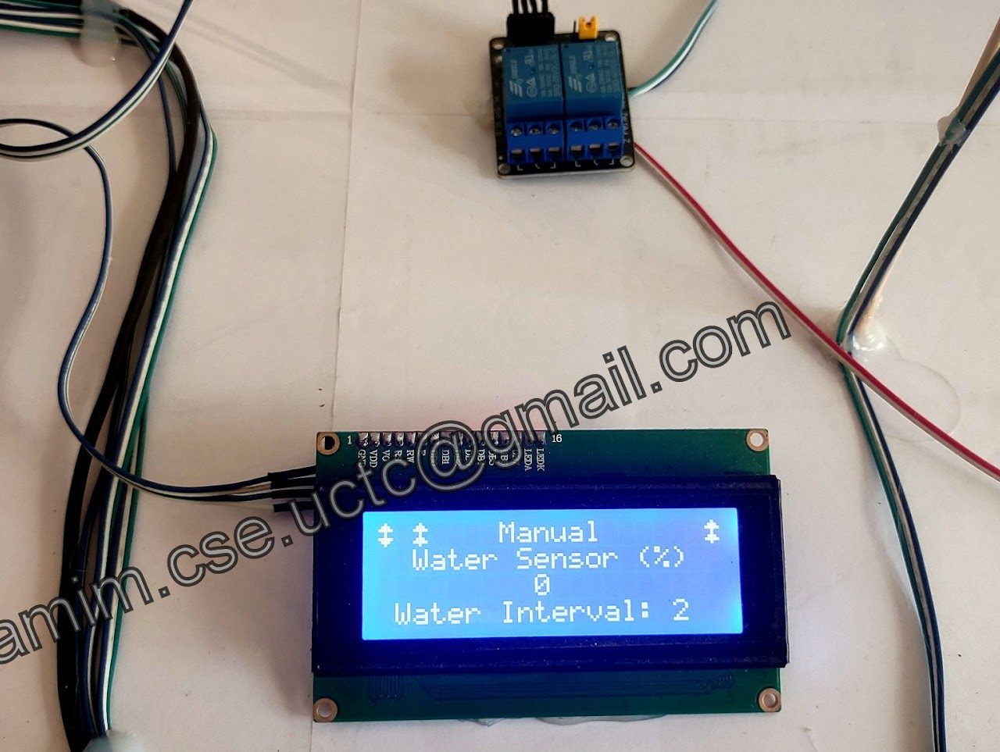
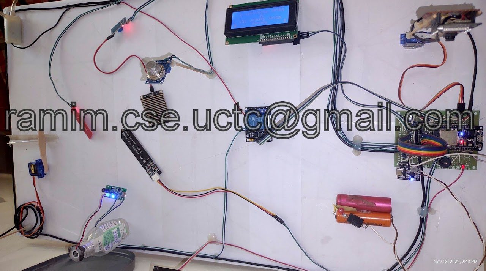
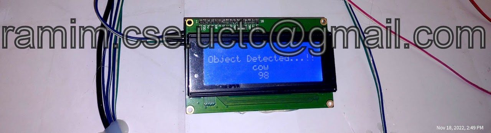
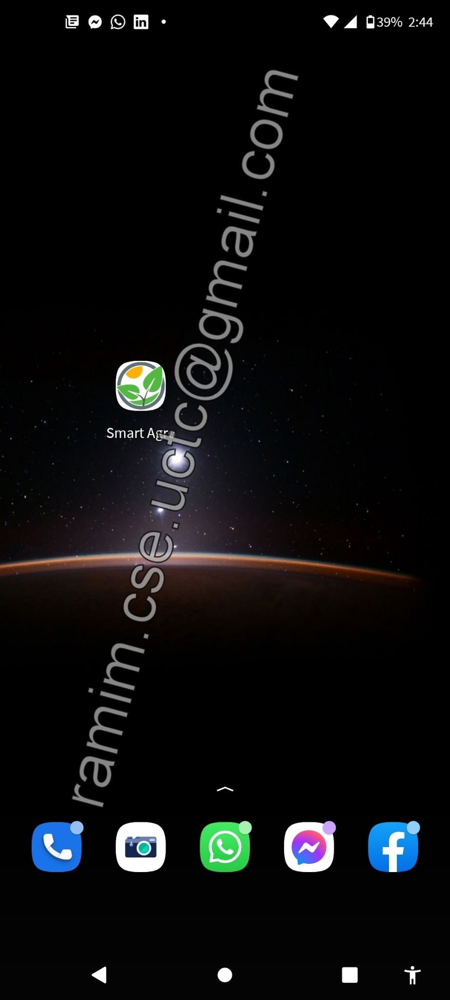
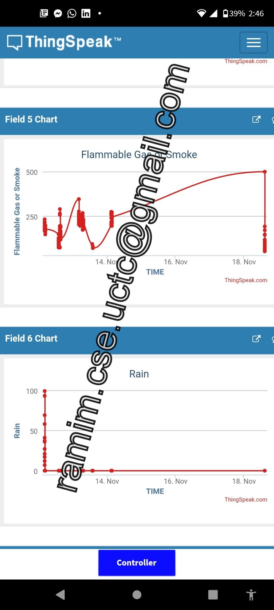
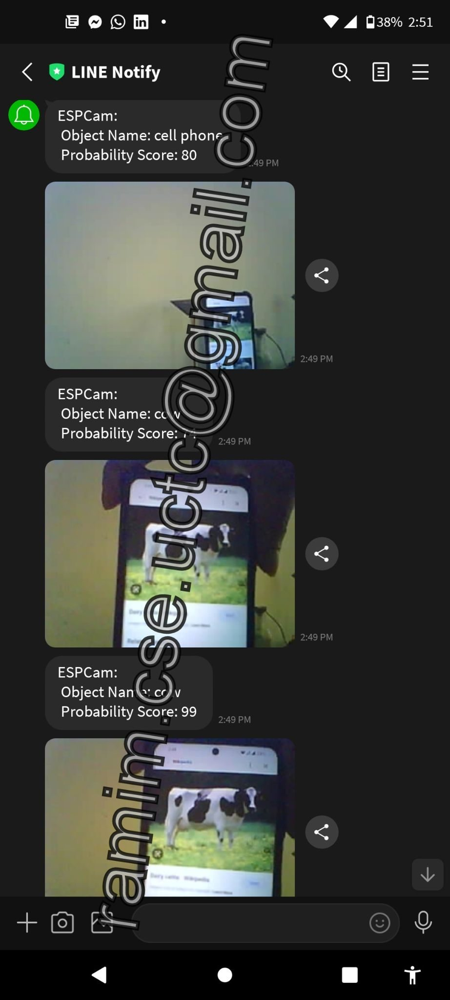
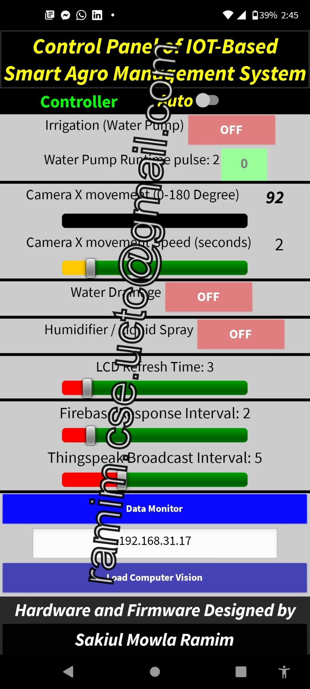

Agriculture
Smart Agriculture Farm Management System (B.Sc. Thesis)
My B.Sc. thesis project: a solar-powered farm management system that combines IoT sensing with image processing. Sensors track the field's conditions, an ESP32-CAM watches the farm around the clock, and the whole system is controlled from an Android app.
- Context
- B.Sc. thesis, Computer Science & Engineering, University of Creative Technology, Chittagong
- Type
- Farm monitoring & control
- Power
- Solar
- Control
- Android app via a real-time database; Auto or Manual mode
- ESP32
- ESP32-CAM
- Image processing
- Soil moisture sensor
- Temperature & humidity sensor
- Flammable gas sensor
- Real-time database
- Android app
- Solar power
Overview
The system is designed for the effective management of an agricultural farm. Running on solar power, it collects field data from a set of sensors, keeps a camera on the farm 24/7, and can run automatically or be operated manually from a phone.
What it monitors
- Temperature and humidity: the climate around the crops.
- Soil moisture: how wet the soil is.
- Flammable gas: detection of flammable gas on the farm.
- Camera: an ESP32-CAM for 24/7 monitoring of the environment, the image-processing side of the system.
Control
- Auto or Manual mode: the system can run on its own or be operated by hand.
- Android app: monitoring and control from a mobile app, synchronised through a real-time database.
- Solar powered: the whole system runs on solar energy.
Gallery








Block diagrams, flow charts, circuit diagrams and source code are not shared publicly.